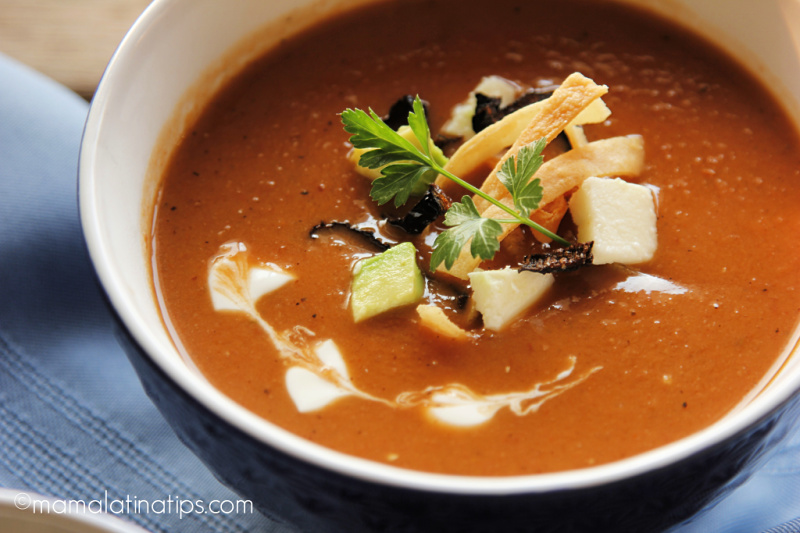

Bean "tarasca" soup

Description
This delightful, classic, Mexican pinto bean soup, Sopa Tarasca, satisfies with its silky texture. Served with queso fresco, cream, tortilla strips & chile ancho.
Ingredients
For the soup
- 3 Roma tomatoes
- 1/4 medium white onion
- 1 garlic clove
- 2 chile ancho peppers
- 4 teaspoons chicken bouillonn
- 3 cups water divided
- 1/2 cup canola oil divided
- 1 bay leaf
- 1/2 teaspoon grounf black pepper
- 2 cups cooked pinto beans
For garnish
- 10 oz queso fresco in small cubers
- 8 tortillas into thin strips
- 1 avocado cut in small cubes
- sour cream to taste
Steps
- Roast tomatoes, onion and garlic on top of a comal, or pan. You can also roast them in the oven. Turn them as they roast. This will take approximately 15-18 minutes.
- With kitchen scissors, cut 1/4 of one of the chiles anchos and place it with the roasting tomatoes. Keep cutting the chiles in thin slices, set aside.
- Place roasted tomatoes, onion, garlic and the roasted piece of chile ancho pepper in a blender. Add Knorr® Selects Chicken Flavor Bouillon and one cup of water. Mix well.
- In a pot or dutch oven heat up one tablespoon of the oil, strain the tomato sauce into the hot oil. Lower the temperature, cover and let it simmer for 5 minutes.
- Next, blend pinto beans with the remaining 2 cups of water and pour into the tomato sauce.
- Add bay leaf and black pepper. Bring to a boil, lower the temperature to medium high, cover and cook for 15 minutes. Taste for salt.
- While soup is cooking, pour the rest of the canola oil in a warm pan over high heat. Carefully add the strips of chile ancho and as soon as they hit the oil, remove them from it. (yes, it is that fast, if you do not remove them quickly they will become bitter)
- Next, carefully place 1/3 of the tortilla strips in the hot oil and fry until crunchy, don’t take your eyes of them, they can burn really easily. Repeat with the other two thirds of the tortillas strips. Set aside.
- Serve the soup, garnished with cheese, tortilla strips, avocado, a piece of the fried chile ancho and sour cream to taste.